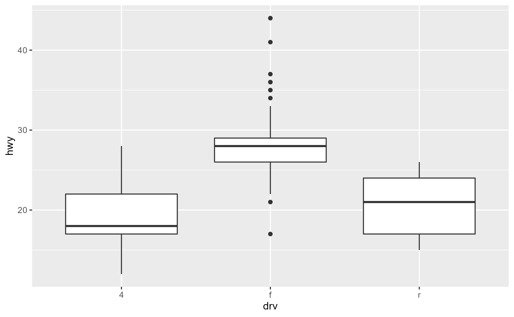
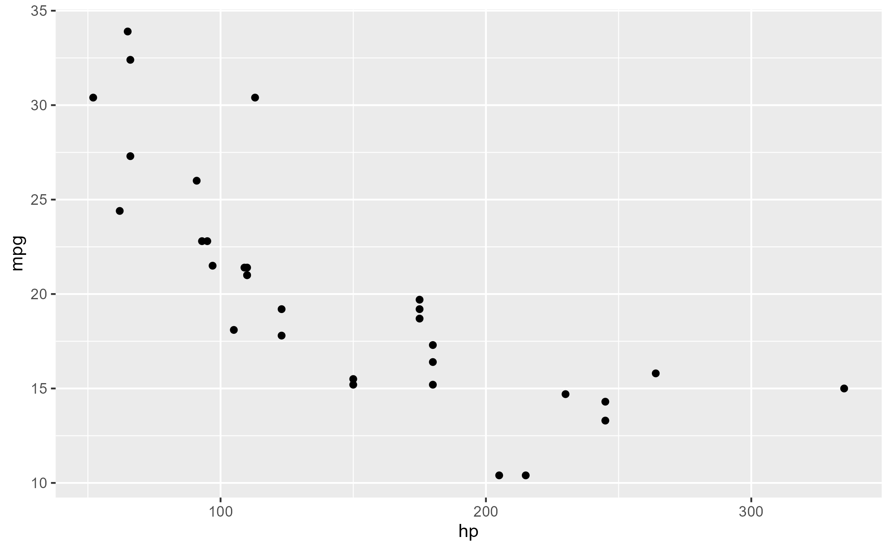
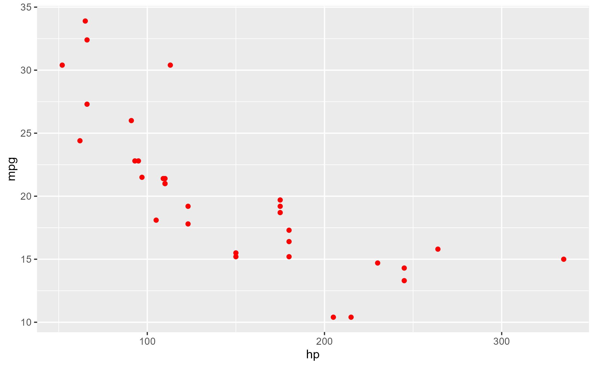
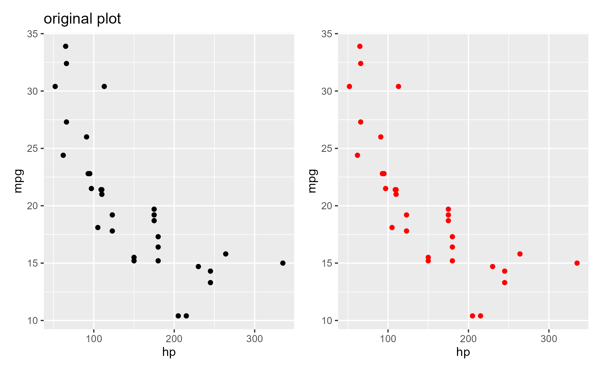

Is ggtrace() safe?
ggtrace() is essentially just a wrapper around
base::trace() designed to make it easy and safe to
programmatically trace/untrace functions and methods.
So the short answer is that ggtrace() is at least as
safe as trace(). But how safe is
trace()?
The beauty of trace() is that the modified function
being traced masks over the original function without
overwriting it. This allows for non-destructive
modifications to the execution behavior.
In this simple example, we add a trace to replace()
which multiples the value of x by 10 as the function enters
the last step.
body(replace)
#> {
#> x[list] <- values
#> x
#> }
replace(1:5, 3, 30)
#> [1] 1 2 30 4 5
trace(replace, tracer = quote(x <- x * 10), at = 3)
#> Tracing function "replace" in package "base"
#> [1] "replace"The traced function looks strange and runs with a different behavior
class(replace)
#> [1] "functionWithTrace"
#> attr(,"package")
#> [1] "methods"
body(replace)
#> {
#> x[list] <- values
#> {
#> .doTrace(x <- x * 10, "step 3")
#> x
#> }
#> }
replace(1:5, 3, 30)
#> Tracing replace(1:5, 3, 30) step 3
#> [1] 10 20 300 40 50But again, this is non-destructive. The original function body is
safely stored away in the "original" attribute of the
traced function
attr(replace, "original")
#> function (x, list, values)
#> {
#> x[list] <- values
#> x
#> }
#> <bytecode: 0x000001a9f89b50a8>
#> <environment: namespace:base>The original function can be recovered by removing the trace with a
call to untrace()
untrace(replace)
#> Untracing function "replace" in package "base"
body(replace)
#> {
#> x[list] <- values
#> x
#> }
replace(1:5, 3, 30)
#> [1] 1 2 30 4 5Beyond this, ggtrace also offers some extra built-in safety measures:
- Cleans up after itself by untracing on exit (the default behavior
with
once = TRUE) - Always untraces before tracing, which prevents nested traces from being created
- Provides ample messages about whethere there is an existing trace
(which you can also check with
is_traced()) - Exits as early as possible if the method expression is ill-formed with more informative error messages that you can actually act on
- Prevents traces from being created on functions that aren’t bound to a variable in some way (i.e., prevents you from creating traces that you can’t trigger)
However, some expression you pass to ggtrace() for
delayed evaluation are not without consequences. You need to be careful
about running functions that have side effects and making
assignments to environments (ex:
self$method <- ... will modify in place). But this isn’t
a problem of ggtrace - they follow from the general rules
of reference semantics in R.
What can you ggtrace()?
Functions
{base} functions
sample(letters, 5)
#> [1] "g" "f" "n" "z" "l"
sample(letters, 5)
#> Triggering trace on `sample`
#> Untracing `sample` on exit.
#> [1] "T" "F" "Y" "X" "N"
sample(letters, 5)
#> [1] "e" "o" "g" "i" "l"Imported functions
ggtrace(ggplot2::mean_se, 1, quote(cat("Running...\n")), verbose = FALSE)
#> `ggplot2::mean_se` now being traced.
ggplot2::mean_se(mtcars$mpg)
#> Triggering trace on `ggplot2::mean_se`
#> Running...
#> Untracing `ggplot2::mean_se` on exit.
#> y ymin ymax
#> 1 20.09062 19.0252 21.15605Custom functions
please_return_number <- function() {
result <- runif(1)
result
}
please_return_number()
#> [1] 0.5456977
ggtrace(please_return_number, -1, quote(result <- "no"), verbose = FALSE)
#> `please_return_number` now being traced.
please_return_number()
#> Triggering trace on `please_return_number`
#> Untracing `please_return_number` on exit.
#> [1] "no"ggproto methods
library(ggplot2)
boxplot_plot <- ggplot(mpg, aes(drv, hwy)) +
geom_boxplot()
boxplot_plot
Default tracing behavior with untracing on exit
ggtrace(StatBoxplot$compute_group, -1, verbose = FALSE)
#> `StatBoxplot$compute_group` now being traced.
# Plot not printed to save space
boxplot_plot
#> Triggering trace on `StatBoxplot$compute_group`
#> Untracing `StatBoxplot$compute_group` on exit.
last_ggtrace()
#> $`[Step 19]> flip_data(df, flipped_aes)`
#> ymin lower middle upper ymax outliers notchupper notchlower x width
#> 1 12 17 18 22 28 18.77841 17.22159 1 0.75
#> relvarwidth flipped_aes
#> 1 10.14889 FALSEPersistent trace with once = FALSE and explicit
untracing with gguntrace()
global_ggtrace_state()
#> [1] FALSE
global_ggtrace_state(TRUE)
#> Global tracedump activated.
clear_global_ggtrace()
#> Global tracedump cleared.
ggtrace(StatBoxplot$compute_group, -1, once = FALSE, verbose = FALSE)
#> `StatBoxplot$compute_group` now being traced.
#> Creating a persistent trace. Remember to `gguntrace(StatBoxplot$compute_group)`!
# Plot not printed to save space
boxplot_plot
#> Triggering persistent trace on `StatBoxplot$compute_group`
#> Triggering persistent trace on `StatBoxplot$compute_group`
#> Triggering persistent trace on `StatBoxplot$compute_group`
gguntrace(StatBoxplot$compute_group)
#> `StatBoxplot$compute_group` no longer being traced.
global_ggtrace()
#> $`StatBoxplot$compute_group-0x000001a9fca29578`
#> $`StatBoxplot$compute_group-0x000001a9fca29578`$`[Step 19]> flip_data(df, flipped_aes)`
#> ymin lower middle upper ymax outliers notchupper notchlower x width
#> 1 12 17 18 22 28 18.77841 17.22159 1 0.75
#> relvarwidth flipped_aes
#> 1 10.14889 FALSE
#>
#>
#> $`StatBoxplot$compute_group-0x000001a9f8a8c5f0`
#> $`StatBoxplot$compute_group-0x000001a9f8a8c5f0`$`[Step 19]> flip_data(df, flipped_aes)`
#> ymin lower middle upper ymax outliers
#> 1 22 26 28 29 33 17, 21, 34, 36, 36, 35, 37, 35, 44, 44, 41
#> notchupper notchlower x width relvarwidth flipped_aes
#> 1 28.46039 27.53961 2 0.75 10.29563 FALSE
#>
#>
#> $`StatBoxplot$compute_group-0x000001a9fe7489d8`
#> $`StatBoxplot$compute_group-0x000001a9fe7489d8`$`[Step 19]> flip_data(df, flipped_aes)`
#> ymin lower middle upper ymax outliers notchupper notchlower x width
#> 1 15 17 21 24 26 23.212 18.788 3 0.75
#> relvarwidth flipped_aes
#> 1 5 FALSE
global_ggtrace_state(FALSE)
#> Global tracedump deactivated.S3/S4 generics
The exported generic function ggplot_build() from
ggplot2 is itself not very meaningful, but the unexported
method for the <ggplot> class
ggplot_build.ggplot() contains the actual data
transformation pipeline.
body(ggplot_build)
#> {
#> attach_plot_env(plot$plot_env)
#> UseMethod("ggplot_build")
#> }
attr(utils::methods("ggplot_build"), "info")
#> visible from
#> ggplot_build.ggplot FALSE registered S3method for ggplot_build
#> ggplot_build.ggplot_built FALSE registered S3method for ggplot_build
#> generic isS4
#> ggplot_build.ggplot ggplot_build FALSE
#> ggplot_build.ggplot_built ggplot_build FALSEYou can trace the ggplot_build() method defined for
<ggplot> in the same way as functions
ggtrace(ggplot2:::ggplot_build.ggplot, -1, verbose = FALSE)
#> `ggplot2:::ggplot_build.ggplot` now being traced.
boxplot_plot
#> Triggering trace on `ggplot2:::ggplot_build.ggplot`
#> Untracing `ggplot2:::ggplot_build.ggplot` on exit.
last_ggtrace()[[1]]$data[[1]]
#> ymin lower middle upper ymax outliers
#> 1 12 17 18 22 28
#> 2 22 26 28 29 33 17, 21, 34, 36, 36, 35, 37, 35, 44, 44, 41
#> 3 15 17 21 24 26
#> notchupper notchlower x flipped_aes PANEL group ymin_final ymax_final xmin
#> 1 18.77841 17.22159 1 FALSE 1 1 12 28 0.625
#> 2 28.46039 27.53961 2 FALSE 1 2 17 44 1.625
#> 3 23.21200 18.78800 3 FALSE 1 3 15 26 2.625
#> xmax xid newx new_width weight colour fill alpha shape linetype linewidth
#> 1 1.375 1 1 0.75 1 grey20 white NA 19 solid 0.5
#> 2 2.375 2 2 0.75 1 grey20 white NA 19 solid 0.5
#> 3 3.375 3 3 0.75 1 grey20 white NA 19 solid 0.5
identical(last_ggtrace()[[1]]$data[[1]], layer_data(boxplot_plot, 1))
#> [1] TRUER6 methods
Adopted from Advanced R Ch. 14.2
library(R6)
Accumulator <- R6Class("Accumulator", list(
sum = 0,
add = function(x = 1) {
self$sum <- self$sum + x
invisible(self)
})
)
x <- Accumulator$new()
x$add(1)
x$sum
#> [1] 1
ggtrace(
method = x$add,
trace_steps = c(1, -1),
trace_exprs = list(
before = quote(self$sum),
after = quote(self$sum)
),
once = FALSE,
verbose = FALSE
)
#> `x$add` now being traced.
#> Creating a persistent trace. Remember to `gguntrace(x$add)`!
x$add(10)
#> Triggering persistent trace on `x$add`
last_ggtrace()
#> $before
#> [1] 1
#>
#> $after
#> [1] 11
x$add(100)
#> Triggering persistent trace on `x$add`
last_ggtrace()
#> $before
#> [1] 11
#>
#> $after
#> [1] 111
gguntrace(x$add)
#> `x$add` no longer being traced.
x$add(1000)
x$sum
#> [1] 1111What can’t you ggtrace()?
- Non-functions (ex: constants, object properties). But you can still
inspect the values for these with
ggbody() - Functions not defined in an environment (ex: you can’t define a
function to trace on-the-spot inside
ggtrace()) - Limited support for closures (the LHS of the
$must itself be an environment where the function can be searched for)
How can I save a modified ggplot?
When you trace the internals of ggplot, that doesn’t directly modify the instructions for plotting. Instead, it changes how certain components behave when they are executed.
This means that you will not get a different ggplot with the
following code if original_plot is being traced with
modifications, since original_plot is not being executed
here.
original_plot <- ggplot(mtcars, aes(hp, mpg)) + geom_point()
ggtrace(ggplot2:::ggplot_build.ggplot, -1, quote(data[[1]]$colour <- "red"), verbose = FALSE)
#> `ggplot2:::ggplot_build.ggplot` now being traced.
modified_plot <- original_plotIt looks like it worked when you first print it…
modified_plot
#> Triggering trace on `ggplot2:::ggplot_build.ggplot`
#> Untracing `ggplot2:::ggplot_build.ggplot` on exit.But the variable modified_pot doesn’t hold modified
code for generating the plot. Instead, it just happened to
trigger the trace on ggplot_build.ggplot(). So the next time it runs,
it’s ran with the normal behavior of original_plot.
modified_plot
To capture the actual figure generated by a ggplot, you can use
ggplotGrob(), which returns the Graphical
object representation of the plot:
ggtrace(ggplot2:::ggplot_build.ggplot, -1, quote(data[[1]]$colour <- "red"), verbose = FALSE)
#> `ggplot2:::ggplot_build.ggplot` now being traced.
modified_plot <- ggplotGrob(original_plot)
#> Triggering trace on `ggplot2:::ggplot_build.ggplot`
#> Untracing `ggplot2:::ggplot_build.ggplot` on exit.
modified_plot
#> TableGrob (16 x 13) "layout": 22 grobs
#> z cells name
#> 1 0 ( 1-16, 1-13) background
#> 2 5 ( 8- 8, 6- 6) spacer
#> 3 7 ( 9- 9, 6- 6) axis-l
#> 4 3 (10-10, 6- 6) spacer
#> 5 6 ( 8- 8, 7- 7) axis-t
#> 6 1 ( 9- 9, 7- 7) panel
#> 7 9 (10-10, 7- 7) axis-b
#> 8 4 ( 8- 8, 8- 8) spacer
#> 9 8 ( 9- 9, 8- 8) axis-r
#> 10 2 (10-10, 8- 8) spacer
#> 11 10 ( 7- 7, 7- 7) xlab-t
#> 12 11 (11-11, 7- 7) xlab-b
#> 13 12 ( 9- 9, 5- 5) ylab-l
#> 14 13 ( 9- 9, 9- 9) ylab-r
#> 15 14 ( 9- 9,11-11) guide-box-right
#> 16 15 ( 9- 9, 3- 3) guide-box-left
#> 17 16 (13-13, 7- 7) guide-box-bottom
#> 18 17 ( 5- 5, 7- 7) guide-box-top
#> 19 18 ( 9- 9, 7- 7) guide-box-inside
#> 20 19 ( 4- 4, 7- 7) subtitle
#> 21 20 ( 3- 3, 7- 7) title
#> 22 21 (14-14, 7- 7) caption
#> grob
#> 1 rect[plot.background..rect.350]
#> 2 zeroGrob[NULL]
#> 3 absoluteGrob[GRID.absoluteGrob.339]
#> 4 zeroGrob[NULL]
#> 5 zeroGrob[NULL]
#> 6 gTree[panel-1.gTree.331]
#> 7 absoluteGrob[GRID.absoluteGrob.335]
#> 8 zeroGrob[NULL]
#> 9 zeroGrob[NULL]
#> 10 zeroGrob[NULL]
#> 11 zeroGrob[NULL]
#> 12 titleGrob[axis.title.x.bottom..titleGrob.342]
#> 13 titleGrob[axis.title.y.left..titleGrob.345]
#> 14 zeroGrob[NULL]
#> 15 zeroGrob[NULL]
#> 16 zeroGrob[NULL]
#> 17 zeroGrob[NULL]
#> 18 zeroGrob[NULL]
#> 19 zeroGrob[NULL]
#> 20 zeroGrob[plot.subtitle..zeroGrob.347]
#> 21 zeroGrob[plot.title..zeroGrob.346]
#> 22 zeroGrob[plot.caption..zeroGrob.348]What you get is an object of class <gtable>, which
you can draw to your device like any other grob:
class(modified_plot)
#> [1] "gtable" "gTree" "grob" "gDesc"
library(grid)
grid.newpage()
grid.draw(modified_plot)
You can also use ggsave() to render a <gtable> to
an image:
# Not ran
ggsave(filename = "modified_plot.png", plot = modified_plot, ...)Still, modified_plot is only the graphical
representation of the plot and not itself a ggplot object so you can’t
keep adding layers to it. So grobs are more limiting in that sense.
But it’s not totally limiting like a raster image of a figure. For
example, patchwork has
patchwork::wrap_ggplot_grob() which allows a
<gtable> to be properly aligned to other ggplots.
library(patchwork)
original_plot_titled <- original_plot + ggtitle("original plot")
# Panels get aligned since `modified_plot` contains info about that
original_plot_titled + wrap_ggplot_grob(modified_plot)